Audio Signal Processing for Deep Learning — Detailed Learner Notes
Companion notes for the video Intro to Audio Processing for Deep Learning and the notebook
notebooks/intro_to_audio_processing.ipynb. These notes go deeper than the video on the concepts that are usually hard the first time: frequency, the Fourier transform, Nyquist/aliasing, spectrograms, the mel scale, and Griffin-Lim.How to use these notes. Open the interactive HTML version (
notes/audio_processing_notes.html) — it has live widgets (drag a slider, watch the FFT change), quizzes with hidden answers, and a progress tracker. This Markdown version is the same text for GitHub reading. Throughout you will find four kinds of boxes: Key takeaway (what to remember), Researcher's corner (the open questions and the papers behind each idea), Industry corner (how this is actually used in production audio/TTS systems), and Common mistake (bugs that cost real teams real weeks). The final section is a roadmap from "I understand spectrograms" to "I can do audio research / build an audio product."
Table of Contents
- Why audio pre-processing matters
- Sound as data: waveforms and sampling rate
- Frequency — the basics, the easy way
- Two different "per second" numbers (don't mix them up!)
- The Fourier Transform — intuition first
- Reading the FFT output: complex numbers, magnitude, phase
- Negative frequencies — why they appear, why we ignore them
- The Nyquist–Shannon sampling theorem
- Aliasing — the downsampling trap (deep dive)
- Sum of sinusoids: un-mixing the paint
- The Inverse Fourier Transform
- Why the plain Fourier transform is not enough for speech
- The Short-Time Fourier Transform (STFT) and Spectrograms — the easy way
- The time–frequency resolution trade-off
- Windowing functions and overlap
- Decibel (dB) scaling — why spectrograms look black without it
- The Mel scale and Mel spectrograms
- Going backwards: the phase problem and Griffin-Lim
- Neural vocoders
- The full pipeline — summary diagram
- torchaudio cheat sheet
- Common pitfalls and quick self-test
- Parameter & keyword glossary — what
n_fft,hop_length, etc. actually mean - From learner to researcher / builder — the roadmap
1. Why audio pre-processing matters
Neural networks do not eat .flac or .mp3 files. They eat tensors of numbers. Everything in this lesson is about the pipeline that converts a recorded sound into a tensor a model can learn from — and (for generative models) how to convert the model's output back into sound you can hear.
There are two main ways audio is fed to modern models:
| Input type | Example models | What the model sees |
|---|---|---|
| Raw waveform | wav2vec 2.0 | A long 1-D array of amplitude samples |
| (Mel) spectrogram | Whisper, DeepSpeech 2, most TTS models, HiFi-GAN | A 2-D "image" of energy per frequency per time step |
To understand either path, you first need a handful of signal-processing ideas. That is what these notes are for.
2. Sound as data: waveforms and sampling rate
Physically, sound is a pressure wave in air. A microphone measures that air pressure thousands of times per second and stores each measurement as a number.
Digitally, an audio file is therefore just a long list of numbers changing over time — a time series:
audio, sampling_rate = torchaudio.load("sample_audio.flac")
# audio -> tensor([[ 0.0012, -0.0034, 0.0051, ...]]) the numbers
# sampling_rate -> 16000 how fast they were captured
Two properties describe every audio signal:
- Sampling rate (samples/second, written Hz) — how many measurements the microphone took each second. 16,000 Hz means 16,000 numbers per second of audio.
- Duration — number of samples ÷ sampling rate. An 8-second clip at 16 kHz has 128,000 samples.
Plotting the raw numbers against time gives the classic waveform — amplitude (air pressure) on the y-axis, time on the x-axis. This view is called the time domain.
Typical sampling rates you will meet:
| Sampling rate | Where you see it |
|---|---|
| 8,000 Hz | Telephone audio |
| 16,000 Hz | Most speech ML models (wav2vec 2.0, Whisper input) |
| 22,050 Hz | Many TTS datasets |
| 44,100 Hz | CD-quality music, most consumer microphones |
| 48,000 Hz | Video / professional audio |
Key takeawayAn audio file is a 1-D array of floats plus one integer (the sampling rate). Everything else — pitch, words, timbre — is pattern in how those floats change, and the rest of these notes is about making that pattern explicit.
Industry cornerProduction systems pick one sampling rate and enforce it at ingestion. Speech recognition almost universally runs at 16 kHz (Whisper, wav2vec 2.0, most ASR APIs). Text-to-speech has drifted upward for quality: LJSpeech-era models used 22.05 kHz, modern neural TTS (HiFi-GAN, VITS, most commercial voices) ships at 24 kHz or 44.1/48 kHz. The single most common data bug in audio teams is a dataset with mixed sampling rates — or worse, 8 kHz telephone audio that was upsampled to 16 kHz: the header says 16 kHz but there is no content above 4 kHz, and a model trained on it learns to expect that hole. Always plot a spectrogram of a random sample from every new data source and look at where the energy stops.
3. Frequency — the basics, the easy way
Frequency = how many times something repeats per second. Its unit is Hertz (Hz) = cycles per second.
The simplest repeating signal is a sinusoid (a sine wave):
$$y(t) = A \sin(2\pi f t + \varphi)$$
Break the formula down — every symbol has an everyday meaning:
| Symbol | Name | Everyday meaning |
|---|---|---|
| \(A\) | Amplitude | How loud — the height of the wave |
| \(f\) | Frequency | How high-pitched — cycles completed per second |
| \(t\) | Time | Where we are on the clock |
| \(\varphi\) | Phase | Where in its cycle the wave starts (a left/right shift) |
| \(2\pi\) | — | One full circle in radians; \(2\pi f t\) means "complete \(f\) circles per second" |
Concrete examples:
- A 1 Hz sine wave completes exactly 1 full up-down cycle in one second.
- A 4 Hz sine wave completes 4 cycles in one second — it wiggles faster.
- A 440 Hz sine wave is the musical note A4 — the orchestra tuning note.
Intuition ladder:
- Low frequency → slow wiggle → deep / bass sound (a truck engine ~100 Hz)
- High frequency → fast wiggle → sharp / treble sound (a whistle ~2,000–4,000 Hz)
- Human hearing range: roughly 20 Hz to 20,000 Hz (the upper limit drops with age)
- Human speech carries most of its useful information below ~8,000 Hz — this is exactly why speech models get away with 16 kHz sampling (see Nyquist, section 8).
Here are 1 Hz / 4 Hz / 8 Hz sinusoids side by side (generated by src/fourier_demo.py) — count the cycles in one second:
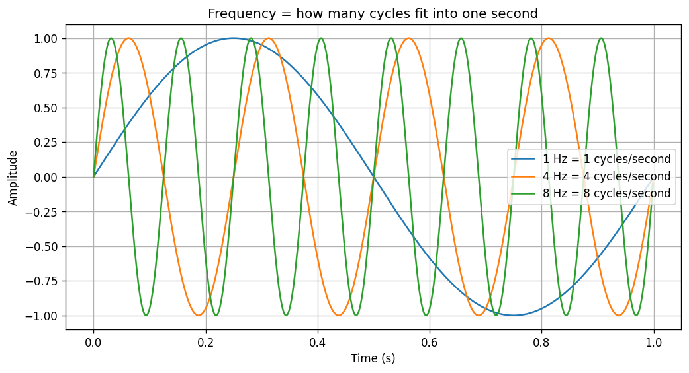
Key takeawayA sinusoid is fully described by three numbers: amplitude (loudness), frequency (pitch), phase (start offset). Fourier analysis will claim that every sound is a sum of these — so these three numbers per frequency are the atoms of everything that follows.
4. Two different "per second" numbers (don't mix them up!)
This is the single most common beginner confusion, so it gets its own section.
| Concept | Unit | Question it answers | Belongs to |
|---|---|---|---|
| Sampling rate | samples/second | How many numbers did the microphone record per second? | The recording (the digital file) |
| Frequency | cycles/second (Hz) | How many times does the sound wave itself repeat per second? | The sound (the physical wave) |
Analogy: filming a spinning fan.
- The fan's rotation speed = frequency (property of the thing being observed).
- The camera's frames per second = sampling rate (property of the measurement).
If the camera films too slowly, the fan can look like it's spinning slowly, backwards, or standing still — that visual illusion is literally aliasing, the same phenomenon we will hit in section 9.
The two numbers are linked by one rule — the Nyquist theorem: a recording at \(f_s\) samples/second can only faithfully contain frequencies up to \(f_s / 2\) cycles/second.
Key takeaway"Hz" is overloaded. Sampling rate = how fast we measured. Frequency = how fast the sound oscillates. When someone says "16 kHz audio" they mean the first; when they say "a 440 Hz tone" they mean the second. Nyquist ties them together: the first must be more than twice the largest value of the second.
5. The Fourier Transform — intuition first
The paint-mixing analogy
Mix blue paint and yellow paint → you get green. Looking at green paint, could you figure out which original colors went into it? With paint, no. With sound, yes — and the tool that does it is the Fourier transform.
The Fourier transform "un-mixes" a signal: it takes a complicated wave and tells you exactly which pure sine waves (which frequencies), in which amounts, were added together to produce it.
Every sound — a voice, a chord, a dog bark — can be written as a sum of plain sinusoids at different frequencies, amplitudes, and phases. That is the deep claim behind Fourier analysis, and it's what makes all of audio ML possible.
What it does, in plain words
- Input: the waveform — amplitude over time (time domain).
- Output: a list of "how much of each frequency is present" — energy over frequency (frequency domain).
If you feed it a pure 20 Hz sine wave, the output is (almost) all zeros with one sharp spike at 20 Hz. The transform found the ingredient:
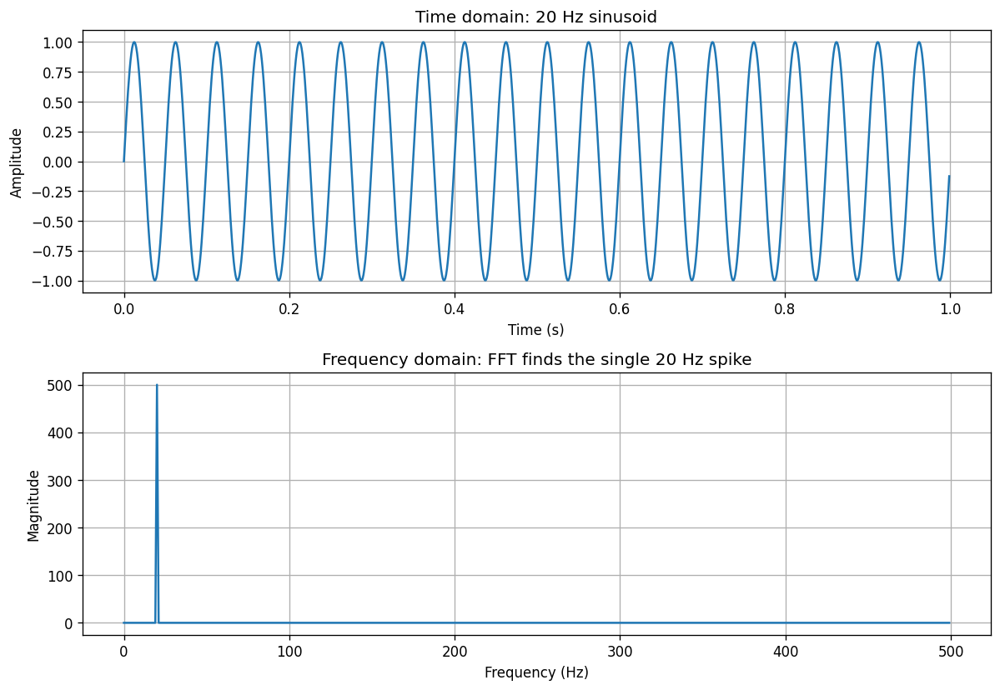
How does it actually find the frequencies? (gentle deep dive)
The formula for the Discrete Fourier Transform (DFT) is:
$$X[k] \;=\; \sum_{n=0}^{N-1} x[n]\; e^{-j 2\pi k n / N}$$
Don't panic — here is what it means:
- \(e^{-j2\pi kn/N}\) is a probe wave: a spinning "reference sinusoid" at frequency \(k\) (Euler's formula says \(e^{j\theta} = \cos\theta + j\sin\theta\), so it packs a cosine and a sine into one object).
- For each candidate frequency \(k\), we multiply our signal by the probe wave and add everything up.
- If the signal contains frequency \(k\), signal and probe stay in step, the products reinforce each other, and the sum is large → big \(X[k]\).
- If the signal doesn't contain frequency \(k\), the products oscillate between positive and negative and cancel to ~zero → tiny \(X[k]\).
So the Fourier transform is essentially a similarity test against every possible frequency: "Signal, how much do you resemble a 1 Hz wave? A 2 Hz wave? A 3 Hz wave? …" The answers, laid out on an axis, are the spectrum.
In code it's one line — the FFT (Fast Fourier Transform, just a fast algorithm for the DFT):
y_fft = np.fft.fft(y) # the spectrum (complex numbers)
freqs = np.fft.fftfreq(len(t), d=t[1]-t[0]) # which frequency each entry corresponds to
Highly recommended: the 3Blue1Brown video on the Fourier Transform — the best visual explanation in existence.
Deep diveThe DFT is a change of basis. Your \(N\) samples are a vector in \(\mathbb{R}^N\) written in the "one spike per time step" basis. The DFT rewrites the same vector in the "one sinusoid per frequency" basis. Concretely it is a matrix multiply, \(X = F x\), where \(F\) is the \(N \times N\) matrix whose row \(k\) is the probe wave \(e^{-j2\pi kn/N}\). Because that matrix is orthogonal (up to a scale), nothing is lost and the inverse is just its conjugate transpose — which is why section 11's round trip is exact. The "Fast" in FFT is only about computing \(Fx\) in \(O(N \log N)\) instead of \(O(N^2)\); the mathematics is identical.
Researcher's cornerOnce you see the DFT as a fixed linear layer with sinusoid filters, a natural question follows: why fixed? A 1-D convolution over the waveform with learned kernels is the same operation with trainable filters, and several lines of research replace the STFT+mel front-end with learned ones — SincNet (Ravanelli & Bengio, 2018: convolutions constrained to be band-pass sinc filters), LEAF (Zeghidour et al., 2021: a fully learnable mel-like front-end), and the raw-waveform encoders of wav2vec 2.0 and EnCodec. The empirical finding, repeated across a decade of papers: learned front-ends approximately re-discover mel-like filterbanks, and beat hand-designed mel only marginally and only with enough data. That is strong evidence that the classical pipeline you are learning encodes real perceptual prior knowledge — and a good example of the kind of question ("is this hand-designed component actually optimal?") that makes for a research project.
6. Reading the FFT output: complex numbers, magnitude, phase
np.fft.fft returns complex numbers of the form \(a + bj\). Each one carries two pieces of information about one frequency:
| Quantity | Formula | Meaning | Do we usually use it? |
|---|---|---|---|
| Magnitude | \(\lvert X \rvert = \sqrt{a^2 + b^2}\) → np.abs(X) |
How much energy (how loud) that frequency is | ✅ Almost always |
| Phase | \(\angle X = \arctan(b/a)\) → np.angle(X) |
Where in its cycle that frequency starts (its time shift) | ⚠️ Ignored for analysis — but see section 18! |
Why complex numbers at all? A sinusoid ingredient needs both "how strong" and "how shifted" to be fully described. One complex number stores both compactly: its length is the strength, its angle is the shift.
Mental model: every frequency ingredient is an arrow. Arrow length = loudness of that frequency. Arrow direction = where that wave starts in its cycle. The FFT hands you one arrow per frequency.
When we "plot the FFT", we almost always plot np.abs(y_fft) — the magnitude spectrum. Throwing away phase is fine for analysis (what frequencies are present) but becomes a real problem for reconstruction (turning a spectrogram back into audio) — that's the Griffin-Lim story later.
7. Negative frequencies — why they appear, why we ignore them
Plot the raw FFT of a real signal and you'll see the spectrum is mirrored: a spike at +20 Hz and an identical one at −20 Hz.
Why: for any real-valued input (all audio is real-valued), the FFT output is conjugate-symmetric — every positive frequency comes paired with a negative twin carrying exactly the same magnitude information. It's a mathematical bookkeeping artifact of using complex exponentials to represent real waves: you need a "counter-spinning" partner so the imaginary parts cancel.
Practical consequence: the second half of the FFT output is redundant. We keep only the first half:
half = len(freqs) // 2
plt.plot(freqs[:half], np.abs(y_fft)[:half]) # positive frequencies only
This is also why an STFT with n_fft = 1024 gives 513 frequency bins, not 1024: \(1024/2 = 512\) positive bins + 1 bin for the DC term (0 Hz, the constant offset). Remember n_fft // 2 + 1 — it explains the shape of every spectrogram you'll ever print.
8. The Nyquist–Shannon sampling theorem
To faithfully capture a frequency of \(f_{max}\) cycles/second, you must sample at more than \(2 f_{max}\) samples/second.
$$f_s > 2 \cdot f_{max} \qquad\Longleftrightarrow\qquad f_{max} < \frac{f_s}{2}$$
The value \(f_s/2\) is called the Nyquist frequency — the hard ceiling on what a recording can represent.
Why factor 2 — the intuition: to know a wave is wiggling, you must catch it at least once near a peak and once near a trough in every cycle — i.e., at least 2 samples per cycle. With fewer, you literally cannot tell how fast it was wiggling (the spinning-fan illusion).
Worked examples:
| Recording at… | Nyquist frequency (max representable) | Enough for… |
|---|---|---|
| 16,000 Hz | 8,000 Hz | Speech ✅ (speech lives mostly < 8 kHz) |
| 44,100 Hz | 22,050 Hz | Full human hearing (≤ 20 kHz) ✅ |
| 1,000 Hz | 500 Hz | Toy demo signals |
Why 44,100 and not exactly 40,000? Human hearing tops out around 20,000 Hz, so 40,000 samples/s is the theoretical minimum. Real-world hardware isn't perfect, so the industry standard adds a safety buffer: 44,100 Hz.
Key takeawayTwo samples per cycle is the hard floor. Below it, the recording doesn't lose the frequency — it invents a wrong one. Sampling rate ÷ 2 is the ceiling on what your data can honestly contain.
9. Aliasing — the downsampling trap (deep dive)
What aliasing is
When a signal contains a frequency above the Nyquist limit of its sampling rate, that frequency doesn't just vanish. It folds back ("aliases") into the representable range and shows up as a wrong, lower frequency. The information is corrupted, not merely lost.
The exact scenario from the video (memorize this reasoning)
You collected speech data and want to fine-tune wav2vec 2.0 (which expects 16 kHz audio):
- Your data has real content up to 10,000 Hz.
- It was recorded at 24,000 samples/s → Nyquist = 12,000 Hz → 10,000 Hz fits. ✅ All good.
- The model needs 16,000 samples/s, so you downsample 24k → 16k.
- New Nyquist = 8,000 Hz. But your data had content up to 10,000 Hz!
- Everything between 8,000–10,000 Hz gets aliased — folded down on top of legitimate lower frequencies, corrupting them. ❌
The image-world analogy: resizing an ImageNet image from 256×256 to 224×224 also throws away high-frequency detail — same math, we just rarely think about it for images.
The notebook/src/aliasing_demo.py experiment
- Create a 40 Hz sinusoid sampled at 200 samples/s (Nyquist = 100 Hz → 40 fits fine; FFT shows a clean spike at 40 Hz).
- Downsample by 4 (keep every 4th sample) → 50 samples/s → Nyquist = 25 Hz < 40 Hz → the FFT spike moves to a wrong, lower frequency. The folded frequency lands at \(f_s - f = 50 - 40 = 10\) Hz. That's aliasing.
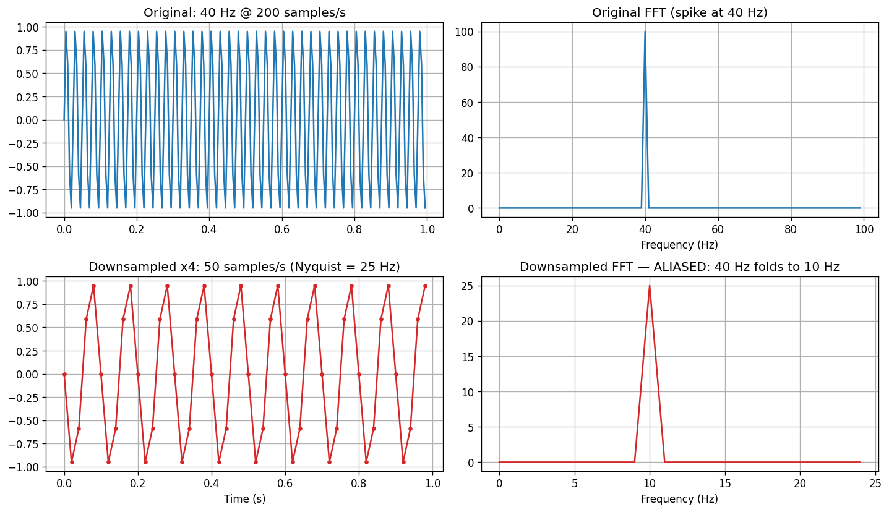
- Downsample by 2 instead → 100 samples/s → Nyquist = 50 Hz > 40 Hz → the spike stays at 40 Hz (a bit less energy, but no corruption). ✅
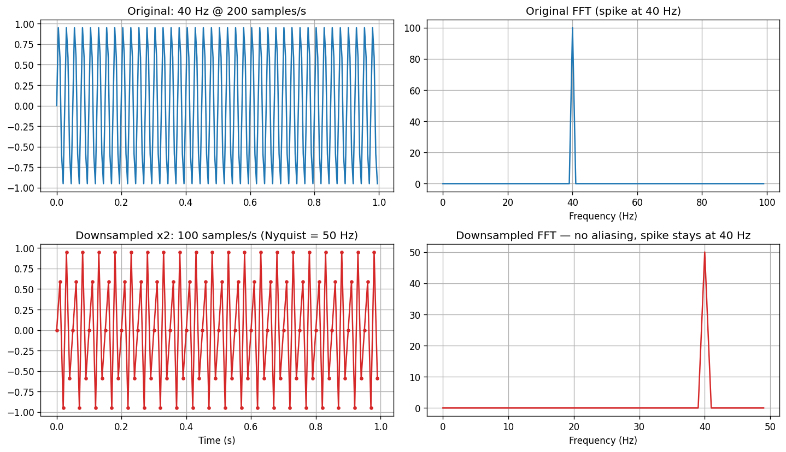
The fold-back formula
An input frequency \(f\) above Nyquist appears at:
$$f_{alias} = \lvert f - k \cdot f_s \rvert \quad \text{for the integer } k \text{ that brings it into } [0, f_s/2]$$
How to downsample safely
Never just "take every Nth sample" on real audio. Proper resamplers low-pass filter first (removing everything above the new Nyquist), then decimate — so out-of-range content is deleted cleanly instead of folding back:
resampler = torchaudio.transforms.Resample(orig_freq=24000, new_freq=16000)
audio_16k = resampler(audio_24k) # anti-aliasing filter is built in
Rule of thumb: know the highest frequency that matters in your data, and never let the target sampling rate drop below twice that.
Common mistake
audio[::3]in a data loader "because it's faster." It is faster, and it silently corrupts every high-frequency consonant in your dataset. The model still trains, the loss still falls, and you only find out weeks later when quality plateaus. Resampling with a proper filter (torchaudio.transforms.Resample,librosa.resample,soxr) costs almost nothing — do it once at preprocessing time and cache the result.
Industry cornerResamplers are not all equal.
soxrandtorchaudio's sinc-interpolation resampler are high quality; olderscipy.signal.resample(FFT-based) rings badly at edges; and some fast "linear interpolation" resamplers alias just as much as slicing. Teams that ship audio products standardize on one resampler and one sampling rate at ingestion, log the original rate as metadata, and refuse mixed-rate batches. When you inherit a dataset, the first diagnostic is a spectrogram: audio that was upsampled from a lower rate has a hard horizontal ceiling where energy stops (4 kHz for telephone audio) — a fingerprint you will learn to spot in one glance.
10. Sum of sinusoids: un-mixing the paint
The real magic: mix several sinusoids — say 5 Hz + 20 Hz + 40 Hz — into one messy-looking waveform. In the time domain it looks like noise-ish wiggles. Run the FFT:
Three clean spikes: at 5 Hz, 20 Hz, and 40 Hz. Add a 250 Hz component too → a fourth spike appears exactly at 250 Hz:
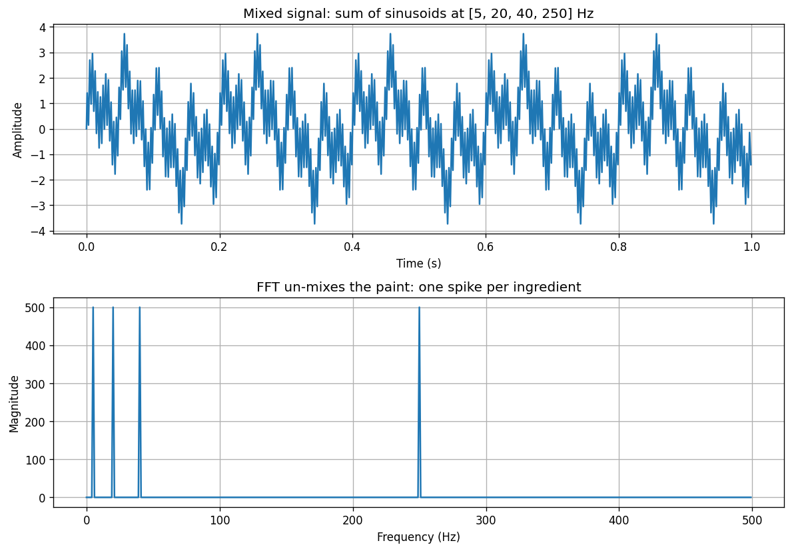
The Fourier transform perfectly un-mixed the recipe. This is precisely what it does to real speech, where hundreds of frequency components (pitch, harmonics, consonant noise, room reverb…) mix together in the air and in the microphone.
Try itIn the mixer above, set two sines to nearby frequencies (say 20 and 21 Hz). The FFT still separates them because the recording is 2 s long, giving 0.5 Hz bins. Now imagine a 0.05 s window instead: the bins would be 20 Hz wide and the two tones would merge into one blob. That is the time–frequency trade-off of section 14, and you just felt it.
11. The Inverse Fourier Transform
The FT is a lossless, reversible change of viewpoint — like translating a book between two languages with zero information lost:
y_fft = np.fft.fft(y) # time domain -> frequency domain
y_back = np.fft.ifft(y_fft) # frequency domain -> time domain
# y_back ≈ y (identical, up to floating-point dust)
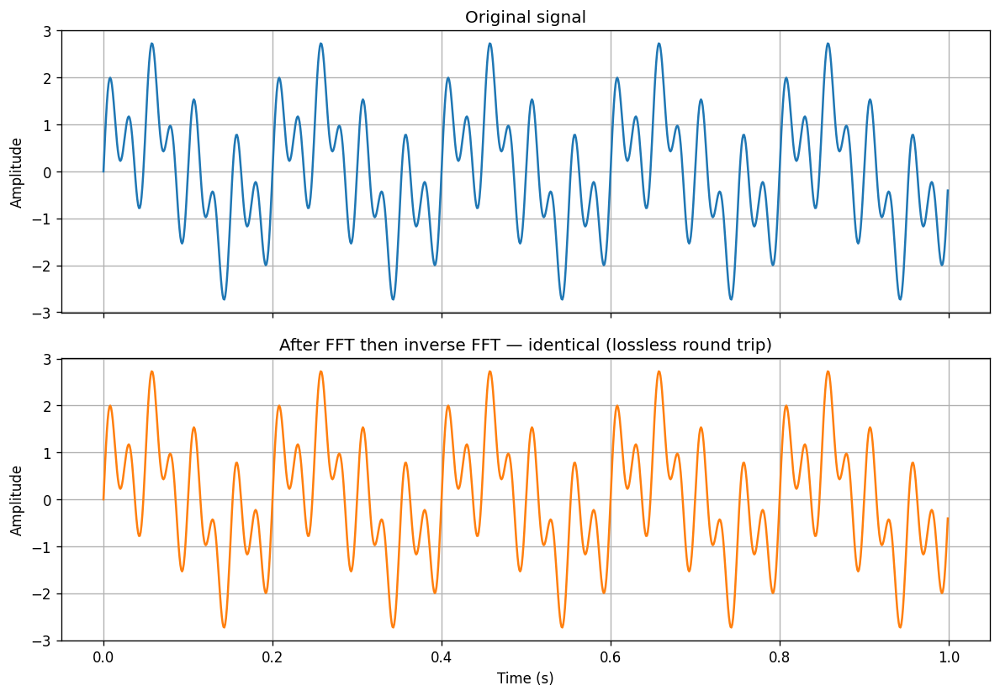
The crucial fine print: perfect inversion needs the full complex values — magnitude and phase. Keep only magnitudes (as we do with spectrograms) and exact inversion becomes impossible. Pin this; it's the entire reason Griffin-Lim exists (section 18).
12. Why the plain Fourier transform is not enough for speech
Apply one big FFT to a whole 8-second sentence and you get… every frequency that occurred anywhere in the clip, all pooled together. You learn what frequencies existed but not when. All temporal information is gone.
But speech is change over time — silence, then a vowel, then a hissy consonant, each with its own frequency fingerprint. A pure sine wave lives happily in the frequency domain because it never changes; speech doesn't.
| Representation | Time info | Frequency info |
|---|---|---|
| Waveform (time domain) | ✅ | ❌ |
| FFT of the whole clip (frequency domain) | ❌ | ✅ |
| Spectrogram (STFT) | ✅ | ✅ ← what we want |
The middle ground is the Short-Time Fourier Transform.
13. The Short-Time Fourier Transform (STFT) and Spectrograms — the easy way
The idea in one sentence
Don't Fourier-transform the whole clip at once — slide a small window along the audio, FFT each little chunk, and stack the results side by side into an image.
Step by step
- Chop the waveform into short chunks (e.g., 400 samples = 25 ms at 16 kHz). Chunk length =
n_fft/nperseg(the window size). - Overlap consecutive chunks (typically 50%). The stride between chunk starts =
hop_length(e.g., 200). - Window each chunk — multiply by a smooth bell-shaped curve (Hann/Hamming) so edges taper to zero (section 15).
- FFT each chunk → one column of frequency energies for that moment in time.
- Stack columns left to right → a 2-D array: the spectrogram.
Deep divesee §23 — Parameter & keyword glossary for detailed explanations of
n_fft,hop_length,nperseg,noverlap,n_mels,n_stft, and how they connect.
How to read a spectrogram
A spectrogram is a picture of sound:
- x-axis = time
- y-axis = frequency (low at bottom, high at top)
- color / brightness = energy (how loud that frequency is at that moment)
Reading a speech spectrogram: silence shows as dark columns; vowels show as stacked horizontal bands (the harmonics of the voice); consonants like /s/ show as high-frequency noise splashes. The shapes of the bands over time correspond to phonemes — trained phoneticians can literally read words off a spectrogram.
# scipy version (returns complex values -> both magnitude AND phase)
from scipy.signal import stft
f, t_spec, Zxx = stft(audio, fs=16000, nperseg=400, noverlap=200)
magnitude, phase = np.abs(Zxx), np.angle(Zxx)
# torchaudio version (returns magnitude/power spectrogram directly)
spec = torchaudio.transforms.Spectrogram(n_fft=400, hop_length=200)(audio)
Plot the phase image and you'll see what looks like pure noise — no visible structure. That's why everyone works with the magnitude spectrogram. (The phase still matters for reconstruction — section 18.)
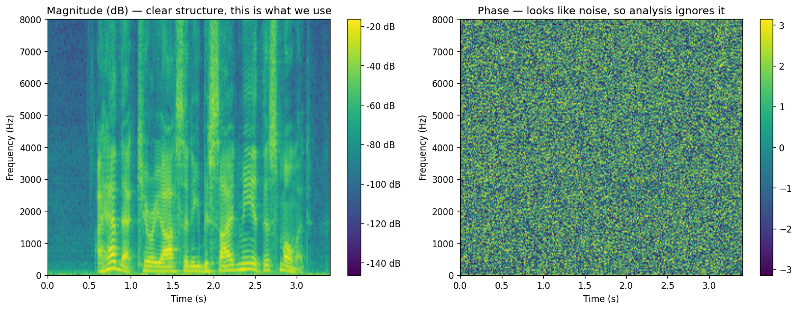
Key takeawayA spectrogram is the FFT applied to a sliding window, stacked into an image: rows = frequency bins (
n_fft//2 + 1), columns = time frames (≈ samples / hop_length). Every audio model that "looks at" sound is looking at this image or its mel-compressed cousin.
14. The time–frequency resolution trade-off
You cannot have perfect time resolution and perfect frequency resolution at once. (This is mathematically the same uncertainty principle as in quantum mechanics.)
| Window size | Time resolution | Frequency resolution | Spectrogram looks… |
|---|---|---|---|
| Small (e.g., 16 samples) | ✅ Excellent — you know exactly when | ❌ Terrible — only 16/2+1 = 9 frequency bins |
Sharp horizontally, hopelessly coarse vertically |
| Large (e.g., 10,000 samples) | ❌ Terrible — each column covers a long stretch | ✅ Excellent — thousands of fine bins | Beautifully detailed vertically, smeared horizontally |
| Medium (e.g., 400–1024) | 👍 Good | 👍 Good | The sweet spot |
Why, intuitively: to measure a frequency you must watch the wave complete several cycles — a longer window sees more cycles, so it pins the frequency down precisely. But a longer window blurs when things happened, because everything inside one window collapses into one column. Short window = the reverse.
Here is the same speech clip at window sizes 16, 400, and 10,000 — watch the detail move between the axes:
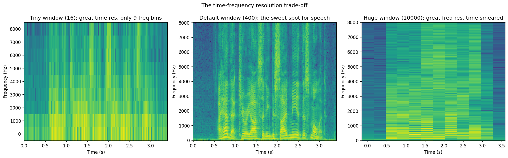
Researcher's cornerThe trade-off is not an engineering limitation but a theorem: the Gabor limit \(\Delta t \cdot \Delta f \geq \frac{1}{4\pi}\) — a signal cannot be simultaneously localized in time and frequency beyond that bound (it is literally the Heisenberg uncertainty principle with time/frequency in place of position/momentum). Research responses: (1) multi-resolution analysis — compute several STFTs at different window sizes and let the model use all of them; this is how modern vocoders are trained: HiFi-GAN, BigVGAN and Vocos use a multi-resolution STFT loss (e.g. windows 512/1024/2048) so that neither transients nor harmonics are neglected. (2) Wavelets / constant-Q transforms — windows whose length varies with frequency (long for bass, short for treble), matching how the ear and music both behave. (3) Learn the window as part of the network. A genuinely open question: what is the right time–frequency tiling for generation as opposed to recognition? Nobody has a principled answer yet.
Practical defaults for 16 kHz speech: n_fft = 400 (25 ms) with hop_length = 200 (later 1024 / 512 for mel spectrograms). These defaults are battle-tested; picking them is "a little bit of an art," but start here.
15. Windowing functions and overlap
Problem: chopping audio into chunks creates artificial cliff edges — the chunk starts and stops abruptly. The FFT interprets those clicks as fake high-frequency energy smeared across the spectrum (spectral leakage).
Fix: before FFT-ing, multiply each chunk by a window function — a smooth bump (Hann, Hamming, …) that is 1 in the middle and fades to ~0 at both ends. Edges get gently faded instead of chopped → much cleaner spectrum.
But fading the edges means the edges of each chunk are underrepresented. Fix for the fix: overlap. With 50% overlap, every sample sits at the center of some window even if it was at the edge of another. Example with window 20,000 / hop 10,000: chunks cover 0–20,000, then 10,000–30,000, then 20,000–40,000, …
Overlap also enables the overlap-add method used by the inverse STFT: overlapping regions must agree wherever windows overlap, which both makes reconstruction possible and provides the consistency constraint that Griffin-Lim exploits (section 18).
Convention: hop_length = n_fft / 2 (50% overlap) is the standard default.
16. Decibel (dB) scaling — why spectrograms look black without it
Plot a raw spectrogram and you'll see a nearly black image with a few bright pixels. The reason: audio energy spans an enormous range — the loudest components can be millions of times stronger than the quietest ones, and a linear color scale spends all its colors on the top sliver.
Human loudness perception is logarithmic (like pitch — see mel, next section), so we log-scale energies into decibels:
$$\text{dB} = 20 \cdot \log_{10}(\text{amplitude}) \qquad \big(= 10 \cdot \log_{10}(\text{power}), \text{ since power} = \text{amplitude}^2\big)$$
db_spec = torchaudio.transforms.AmplitudeToDB()(spec)
Handy facts: +6 dB ≈ double the amplitude; +20 dB = 10× the amplitude. After dB conversion, the spectrogram suddenly shows all its structure — harmonics, formants, noise floors. Always convert to dB before visualizing or feeding spectrograms to a model.
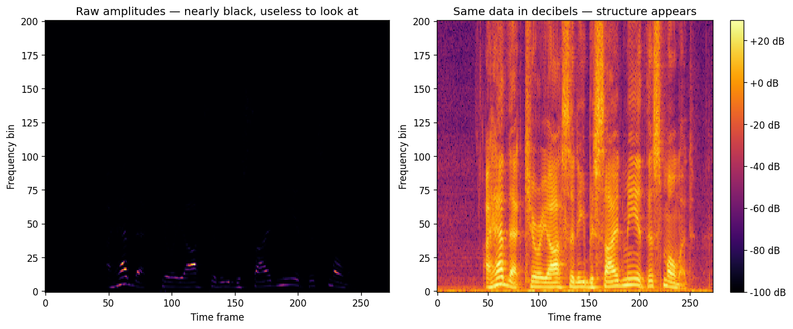
Common mistakeMixing up the two dB formulas.
20·log10applies to amplitude (|X|);10·log10applies to power (|X|²). They give identical results if you feed the right quantity, and a silent 2× error in every value if you don't. torchaudio'sAmplitudeToDB(stype="power")is the default and expects a power spectrogram —Spectrogram(power=2.0), also the default — so the defaults agree; the moment you passpower=1.0(magnitude) you must switch tostype="magnitude". Also note thetop_db=80clamp: it floors everything more than 80 dB below the peak, which is usually what you want but will erase a quiet tail if you don't know it's there.
Key takeawayLoudness perception is logarithmic, and so is the useful dynamic range of audio. A linear scale gives all its resolution to the loudest 1%; dB spreads it evenly. This is not a visualization nicety: models trained on linear magnitudes learn loud vowels and ignore quiet consonants. Use log/dB features as the model's target, always.
17. The Mel scale and Mel spectrograms
Human pitch perception is not linear
Play 200 Hz → 400 Hz: sounds like a big jump. Play 2,500 Hz → 2,700 Hz (the same +200 Hz): barely noticeable. We hear ratios, not absolute differences — 200→400 doubled the frequency; 2500→2700 raised it only 8%.
Same as driving (the video's analogy): 10 → 20 mph feels dramatic (you doubled your speed); 60 → 70 mph feels like nothing, even though both are +10 mph. This "proportions, not absolutes" pattern is the power law of perception and applies to loudness, brightness, weight… and pitch.
The mel scale
Researchers played tones to listeners, asked which pitch differences felt equal, and fit a curve to the data:
$$m = 2595 \cdot \log_{10}\!\left(1 + \frac{f}{700}\right) \qquad \big(\text{equivalently } 1127 \cdot \ln(1 + f/700)\big)$$
Properties of the curve:
- Below ~1,000 Hz: almost linear — small Hz changes are perceptually big, so they get lots of mel-space.
- Above ~1,000 Hz: logarithmic — huge Hz ranges compress into little mel-space, mirroring how indifferent our ears become up there.
Equal steps in mel ≈ equal steps in perceived pitch. (Two slightly different standard variants exist: HTK and Slaney — just be consistent; the notebook uses Slaney.)
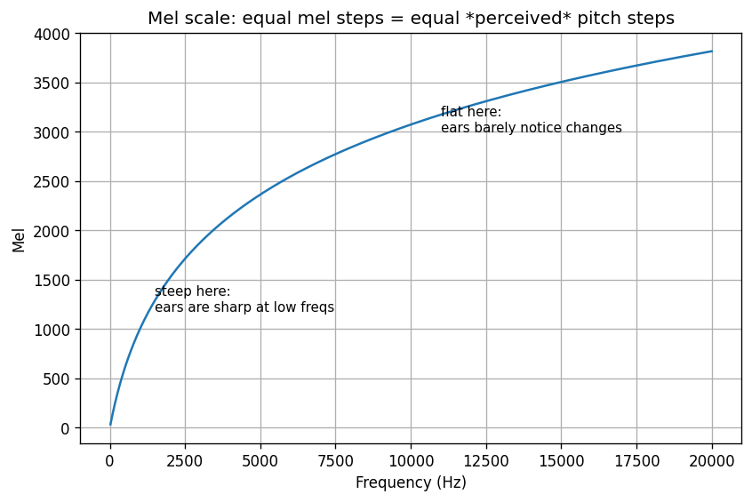
Mel spectrogram = spectrogram + mel-spaced frequency bins
Take the ordinary spectrogram, then pool its hundreds of linear frequency bins into a small number of mel bins (triangular overlapping filters): dense narrow bins at low frequencies (where our ears are sharp), wide sparse bins at high frequencies (where they're not).
mel_transform = torchaudio.transforms.MelSpectrogram(
sample_rate=16000,
n_fft=1024, # STFT window size
hop_length=512, # STFT stride
n_mels=128, # number of mel bins (128 is the speech-model standard)
mel_scale="slaney",
)
mel_spec = mel_transform(audio) # internally: STFT -> mel filterbank
mel_db = torchaudio.transforms.AmplitudeToDB()(mel_spec)
Constraints and consequences:
n_melsmust be ≤ the number of FFT bins (n_fft // 2 + 1). Withn_fft=1024you have 513 linear bins → 128 mels is comfortable.- The mapping is many-to-one (several linear bins pour into one mel bin), so it is not perfectly invertible — information is genuinely discarded. This matters for reconstruction (next section).
- Why models love mel spectrograms: smaller input (128 rows instead of 513), and resolution is allocated where human-relevant information actually lives. The de-facto standard input for speech models.
Industry cornerMel parameters are a contract between components, and breaking the contract is the #1 bug in TTS deployments. A TTS acoustic model (Tacotron2, FastSpeech2, VITS) predicts mels; a separately trained vocoder (HiFi-GAN) consumes them. If they disagree on
n_mels,n_fft,hop_length,fmin/fmax,mel_scale(HTK vs Slaney), log base, or normalization, you get audio that is anywhere from "slightly muffled" to "screeching garbage" — with no error message. Real-world numbers: Tacotron2/HiFi-GAN use 80 mels at 22.05 kHz with hop 256; Whisper uses 80 mels at 16 kHz (128 inlarge-v3); many 24 kHz TTS stacks use 100 mels with hop 256. When you pair a pretrained vocoder with your own model, copy its exact feature config — do not "improve" it.
Researcher's cornerMel was fit to 1937 psychoacoustic data (Stevens, Volkmann & Newman) with ~a dozen listeners. It has survived because it is good enough and universal, not because it is optimal. Three live research directions: (1) learned front-ends (LEAF, SincNet) that start from mel and adapt — they consistently converge to something mel-like, which is both reassuring and a little disappointing; (2) replacing mel entirely with neural codec tokens (EnCodec, SoundStream, DAC) — the intermediate representation becomes discrete and learned, which is the foundation of every LLM-style TTS system (VALL-E, CosyVoice, Fish-Speech); (3) bandwidth: mel with
fmax=8000throws away 8–11 kHz, which is fine for intelligibility but audibly dulls "presence" and breathiness — one reason modern TTS moved to 24–48 kHz and 100+ mels. If you want a first research question you can actually test on a laptop: how few mel bins can a vocoder tolerate before listeners notice?
18. Going backwards: the phase problem and Griffin-Lim
Why we need to invert at all
A typical text-to-speech system doesn't generate waveforms directly — it generates a mel spectrogram (a much easier target to model), and then something must convert that picture back into actual audio.
The two obstacles
- Mel → linear spectrogram is lossy. Many linear bins were pooled into each mel bin; un-pooling can't perfectly restore them.
torchaudio.transforms.InverseMelScalegives a good least-squares estimate. - We only have magnitudes — the phase is gone. The inverse STFT needs full complex values (magnitude and phase). Spectrograms kept only magnitude. Without phase, we don't know how the frequency components in each frame align in time with each other, and adjacent frames won't stitch together into a coherent waveform.
The Griffin-Lim algorithm — phase by iteration
Griffin-Lim recovers a plausible phase by exploiting one constraint: because STFT windows overlap, neighboring frames share samples — so their phases can't be arbitrary; they must be consistent with a single underlying waveform.
The loop:
- Guess random phases and attach them to the known magnitudes.
- Inverse STFT → some waveform (initially garbage-ish).
- STFT that waveform → its magnitudes have drifted from the target.
- Snap magnitudes back to the known target values; keep the phases this round produced.
- Repeat (e.g., 100 iterations). Each pass makes the phases more self-consistent; only consistent phases survive the round-trip.
It's a projection method: bounce between "waveforms with the right magnitudes" and "valid consistent STFTs" until they agree.
Full reconstruction pipeline in torchaudio
# mel spectrogram -> linear spectrogram -> waveform
inv_mel = torchaudio.transforms.InverseMelScale(
n_stft=1024 // 2 + 1, # 513 positive-frequency bins
n_mels=128, sample_rate=16000, mel_scale="slaney",
)
griffin_lim = torchaudio.transforms.GriffinLim(
n_fft=1024, hop_length=512, n_iter=100,
)
waveform_rec = griffin_lim(inv_mel(mel_spectrogram))
Expected result: clearly intelligible speech that sounds slightly robotic/metallic. Two error sources: the lossy mel→linear step, and Griffin-Lim's phase being an iterative approximation, never the true phase.
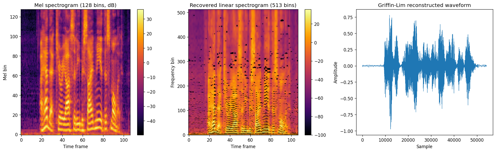
Key takeawayGoing forward (waveform → mel) throws away two things: phase, and fine frequency detail between mel bins. Going backward must guess both. Griffin-Lim guesses phase by demanding consistency between overlapping windows; the pseudo-inverse guesses frequency detail by least squares. Both guesses are audible — that metallic timbre is the sound of missing information.
Researcher's corner"Recover a signal from the magnitude of its STFT" is the phase retrieval problem, and it is a real research field (it also appears in X-ray crystallography and optics). Griffin-Lim (1984) is alternating projections; Fast Griffin-Lim (Perraudin et al., 2013) adds momentum and converges in a fraction of the iterations; deep-learning variants learn the phase directly. The current practical answer in TTS is to stop guessing and predict phase: Vocos (2023) and iSTFTNet output magnitude and phase from a mel and finish with a plain inverse STFT — no iterations, no autoregression, faster than HiFi-GAN with comparable quality. An accessible research question here: Griffin-Lim's quality depends heavily on the initial phase guess — can a tiny network produce a better initialization that lets 5 iterations do the work of 100?
19. Neural vocoders
Griffin-Lim is the classical baseline, but modern systems use neural vocoders — networks trained to map mel spectrograms straight to waveforms:
- HiFi-GAN — fast GAN-based vocoder, near-human quality, the current workhorse.
- WaveNet / WaveGlow / MelGAN — earlier landmark designs.
Because a vocoder is trained on real audio, it learns what plausible phase (and the detail lost by mel binning) should look like, instead of solving for it iteratively. Result: dramatically more natural audio. Modern TTS = (text → mel spectrogram model) + (mel spectrogram → waveform vocoder).
Industry cornerVocoder choice in 2024–2026, roughly: HiFi-GAN is the default you will find in most open TTS repos (fast, good, well understood); BigVGAN (NVIDIA) generalizes better to unseen speakers and music at higher compute; Vocos is the speed king (inverse-STFT head, no upsampling stack) and runs comfortably faster than real time on CPU — relevant if you are shipping on-device. The newest systems (CosyVoice, Fish-Speech, most LLM-based TTS) skip mels entirely and have a neural codec decoder play the vocoder role. For a product, the vocoder decides your latency floor and your CPU bill; for a researcher it is the component where "sounds human" is actually won or lost, and the metric that matters is a listening test (MOS), not a loss curve.
20. The full pipeline — summary diagram
FOURIER TRANSFORM (all time info lost -> rarely used alone)
┌───────────────────────────► frequency domain
│
WAVEFORM ──────────────┤
(time domain, │ STFT (window + overlap + FFT per chunk)
raw samples) └───────────────────────────► SPECTROGRAM ("picture of audio")
│
│ mel filterbank (perceptual scale)
▼
MEL SPECTROGRAM ◄── what TTS models
│ predict, what ASR
┌─────────────────────────────────────────────────┘ models consume
│ InverseMelScale (approximate! many-to-one binning)
▼
LINEAR SPECTROGRAM (magnitude only — phase is missing)
│
│ Griffin-Lim (iterative phase recovery) — or a neural vocoder (HiFi-GAN)
▼
RECONSTRUCTED WAVEFORM (≈ approximation of the original)
Two entry points for neural networks:
- Raw waveform in → wav2vec 2.0 and friends.
- Spectrogram / mel spectrogram in → DeepSpeech 2, Whisper, most TTS.
21. torchaudio cheat sheet
| Task | API |
|---|---|
| Load audio | audio, sr = torchaudio.load("file.flac") |
| Resample safely (anti-aliased) | T.Resample(orig_freq, new_freq) |
| Linear spectrogram | T.Spectrogram(n_fft=400, hop_length=200) |
| Mel spectrogram | T.MelSpectrogram(sample_rate, n_fft, hop_length, n_mels, mel_scale) |
| Amplitude → decibels | T.AmplitudeToDB() |
| Mel → linear spectrogram | T.InverseMelScale(n_stft, n_mels, sample_rate, mel_scale) |
| Magnitude spectrogram → waveform | T.GriffinLim(n_fft, hop_length, n_iter) |
| Play audio in a notebook | IPython.display.Audio(waveform, rate=sr) |
(T = torchaudio.transforms.) Numpy/scipy counterparts: np.fft.fft, np.fft.ifft, np.fft.fftfreq, scipy.signal.stft.
22. Common pitfalls and quick self-test
Pitfalls
- Confusing samples/second with cycles/second. The first describes the recording, the second the sound. (Section 4)
- Downsampling by slicing (
y[::4]). Causes aliasing. Use a proper resampler with an anti-aliasing filter. - Forgetting dB conversion before viewing/feeding spectrograms — you'll see (and the model will see) almost nothing.
- Expecting
n_fftfrequency bins. You getn_fft // 2 + 1(positive frequencies + DC). - Expecting mel → audio to be perfect. Mel binning is many-to-one and phase is gone; reconstruction is inherently approximate.
- Assuming sampling rates match. Always check the file's actual rate against what the model expects; resample if needed.
Self-test — try each one before opening the answer
1. An audio file has 32,000 samples and lasts 2 seconds. What is its sampling rate, and what is the highest frequency it can represent?
Sampling rate = samples ÷ seconds = 32,000 / 2 = 16,000 Hz. Nyquist = 16,000 / 2 = 8,000 Hz — enough for speech, not for music.
2. You slice-downsample a 60 Hz sinusoid recorded at 200 samples/s by a factor of 2. Does it alias? What about a factor of 4 — and at what frequency does the spike appear?
Factor 2 → 100 samples/s → Nyquist 50 Hz < 60 Hz → aliases, appearing at |60 − 100| = 40 Hz. Factor 4 → 50 samples/s → Nyquist 25 Hz → aliases again; fold 60 into [0, 25]: |60 − 50| = 10 Hz → spike at 10 Hz. (Trick in the question: even factor 2 is unsafe here — always compute the new Nyquist.)
3. Why does an STFT with `n_fft=400` produce 201 frequency bins?
The FFT of 400 real samples is conjugate-symmetric: the second half mirrors the first. Unique information = 400/2 = 200 positive-frequency bins + 1 for the DC (0 Hz) bin = 201 = n_fft // 2 + 1.
4. Give one reason to prefer a large STFT window and one to prefer a small one.
Large: finer frequency resolution — more bins, each covering fewer Hz — so closely spaced harmonics separate. Small: finer time resolution — you can tell when a click or consonant burst happened. You cannot have both (Gabor limit); speech pipelines settle at 25–64 ms.
5. Why can't you run an inverse STFT directly on a magnitude spectrogram, and what property of overlapping windows lets Griffin-Lim work anyway?
The inverse STFT needs the full complex values (magnitude and phase); a magnitude spectrogram has thrown the phase away, so there are infinitely many waveforms consistent with it. Because windows overlap, neighbouring frames share samples, so their phases cannot be arbitrary — only mutually consistent phases survive an STFT → iSTFT → STFT round trip. Griffin-Lim iterates that round trip, snapping magnitudes back to the target each time, until a consistent phase emerges.
6. Why do mel bins get wider as frequency increases?
Because human pitch perception is roughly logarithmic above ~1 kHz: we hear ratios, so a fixed Hz difference feels smaller the higher you go. Mel spacing allocates many narrow bins where the ear is sharp (low Hz) and few wide bins where it is dull (high Hz), spending resolution where it is perceptually useful.
7. (Industry) A colleague's TTS model sounds muffled with a pretrained HiFi-GAN. Loss curves look fine. Name three feature-config parameters you would check first.
n_mels, fmax (e.g. 8000 vs 11025 vs 12000), and the mel scale / log convention (HTK vs Slaney; natural log vs log10; whether a clamp/normalization was applied). Also hop_length/n_fft and sampling rate. Any mismatch between the acoustic model's features and the vocoder's training features produces exactly this symptom with no error.
8. (Research) Learned front-ends like LEAF tend to converge to mel-like filterbanks. What does that tell you, and what is one way you could turn it into an experiment?
It suggests mel encodes a real prior about speech/hearing that data alone re-discovers — i.e. the hand-designed pipeline is close to what the task wants. Experiment: train a small classifier or vocoder with (a) fixed mel, (b) a learnable filterbank initialised at mel, (c) a learnable filterbank initialised randomly; compare accuracy/quality and plot the learned centre frequencies against the mel curve. The gap between (b) and (c), and how far (c) drifts toward mel, is the finding.
23. Parameter & keyword glossary — what n_fft, hop_length, etc. actually mean
When you first open torchaudio or scipy code, you see a wall of short names: n_fft, hop_length, n_mels, n_stft, nperseg, noverlap. They are not arbitrary — each one controls how long a slice of audio is, how far you slide that slice, how many frequency rows you get, or how the result is scaled. This section is the decoder ring.
Quick reference table
| Keyword | Library | What it counts | Typical speech value | Main effect |
|---|---|---|---|---|
sample_rate / fs |
both | samples per second of the audio file | 16,000 | Converts between sample indices and real time (seconds, Hz) |
n_fft |
torchaudio | samples in one STFT window | 400 or 1024 | Window length → frequency resolution + time smearing |
hop_length |
torchaudio | samples you advance between windows | 200 or 512 | Time step between spectrogram columns |
nperseg |
scipy STFT | same role as n_fft |
400 | Window length (scipy name) |
noverlap |
scipy STFT | overlapping samples between windows | 200 | Overlap = nperseg - hop_length |
n_stft |
torchaudio | number of linear frequency bins | 513 (= 1024//2+1) | Tells inverse transforms the spectrogram width |
n_mels |
torchaudio | number of mel frequency bins | 128 | Vertical size of a mel spectrogram |
mel_scale |
torchaudio | which Hz→mel formula | "slaney" or "htk" |
Must match between forward and inverse mel |
n_iter |
GriffinLim | phase-recovery iterations | 100 | More = better (slower) reconstruction |
orig_freq / new_freq |
Resample | old and new sampling rates | 24000 → 16000 | Safe downsampling with anti-aliasing filter |
sample_rate (also sampling_rate, fs, sr)
Meaning: how many amplitude numbers were recorded per second of real time.
Units: samples/second (written Hz, but this is not the pitch of the sound — see section 4).
Example: at sample_rate = 16000, sample index 16,000 is exactly 1.0 second into the clip.
Why it matters everywhere:
- Converts window sizes from samples to milliseconds: n_fft / sample_rate seconds.
- Sets the Nyquist ceiling: max representable frequency = sample_rate / 2.
- Mel filterbanks and resamplers need it to place frequency bins on the correct Hz axis.
- Models are trained at a fixed rate — if your file is 44.1 kHz and the model expects 16 kHz, you must resample.
duration_seconds = len(audio) / sample_rate
window_ms = n_fft / sample_rate * 1000 # e.g. 400 / 16000 = 25 ms
nyquist_hz = sample_rate / 2 # e.g. 8000 Hz at 16 kHz
n_fft — the STFT window size (in samples)
Full name: number of FFT points.
Meaning: how many consecutive audio samples go into one short-time Fourier transform. This is the length of each chunk before FFT.
Not the same as: the number of frequency bins in the output — you get n_fft // 2 + 1 bins (positive frequencies + DC), not n_fft.
What it controls:
Larger n_fft |
Smaller n_fft |
|---|---|
| More frequency bins (finer pitch detail) | Fewer frequency bins |
| Each bin covers a narrower Hz band | Wider, blurrier frequency bands |
| Longer time window → worse when things happened | Shorter window → better time precision |
| Needs more samples to "see" low frequencies clearly | Can miss closely spaced harmonics |
Intuition: n_fft is how many samples you stare at before asking "what frequencies are in this little slice?" Stare longer → you resolve pitch better but lose track of timing.
Worked example at 16 kHz:
n_fft |
Window duration | Frequency bins | Bin spacing (approx.) |
|---|---|---|---|
| 400 | 25 ms | 201 | ~80 Hz per bin |
| 1024 | 64 ms | 513 | ~31 Hz per bin |
| 16 | 1 ms | 9 | very coarse |
T.Spectrogram(n_fft=400, hop_length=200)(audio)
# output shape: (201, num_time_frames) — NOT (400, ...)
Rule of thumb for speech: 400 (25 ms) for quick spectrograms; 1024 (64 ms) when building mel features for ASR/TTS — long enough to resolve harmonics, short enough that pitch doesn't change much inside one window.
hop_length — the stride between windows
Meaning: after FFT-ing one window of n_fft samples, advance the window start by hop_length samples and FFT again. This is the stride or hop between consecutive STFT columns.
Overlap: when hop_length < n_fft, windows overlap. Overlap in samples:
$$\text{overlap} = n\_fft - hop\_length$$
50% overlap (standard): hop_length = n_fft // 2
- Window 1: samples 0 … 399
- Window 2: samples 200 … 599 (200 samples shared)
- Window 3: samples 400 … 799
- …
What it controls: - Smaller hop → more time columns → finer time resolution → larger tensor → slower training. - Larger hop → fewer columns → coarser timing → smaller tensor.
Number of time frames (approx.):
$$\text{num\_frames} \approx \left\lfloor \frac{\text{num\_samples}}{hop\_length} \right\rfloor$$
For our 3.4 s clip at 16 kHz (~54,400 samples) with hop_length=200: about 272 columns. With hop_length=512: about 106 columns.
Why overlap exists: window functions fade the edges of each chunk to zero. Without overlap, the faded edge samples would never be analyzed at full strength. 50% overlap ensures every sample sits near the center of some window where the window weight is strongest.
Must match on inversion: GriffinLim and inverse STFT need the same n_fft and hop_length used to create the spectrogram.
nperseg and noverlap — scipy's names for the same thing
scipy uses different parameter names for the identical idea:
| scipy | torchaudio equivalent | Relationship |
|---|---|---|
nperseg |
n_fft |
Length of each segment/window |
noverlap |
n_fft - hop_length |
Samples shared between consecutive segments |
fs |
sample_rate |
Sampling rate in Hz |
# These two calls describe the same STFT settings:
scipy.signal.stft(audio, fs=16000, nperseg=400, noverlap=200)
T.Spectrogram(n_fft=400, hop_length=200)(audio)
# because hop_length = nperseg - noverlap = 400 - 200 = 200
Frequency bins, n_stft, and the DC term
After an FFT of length n_fft, the output has n_fft complex numbers — but for real audio, half are redundant negative-frequency mirrors.
What we keep: n_stft = n_fft // 2 + 1 bins:
- Bin 0 = DC (0 Hz) — the average offset of the signal, not a pitch.
- Bins 1 … n_fft//2 - 1 = positive frequencies.
- Bin n_fft//2 = Nyquist frequency = sample_rate / 2 (only appears when n_fft is even).
Example: n_fft=1024 → n_stft = 513. That is why mel spectrograms with n_fft=1024 have a linear stage of width 513 before being compressed to 128 mel bins.
Each bin's center frequency (approx.):
$$f_k = k \times \frac{sample\_rate}{n\_fft} \quad \text{for bin index } k$$
So at 16 kHz with n_fft=400: bin 1 ≈ 40 Hz, bin 2 ≈ 80 Hz, …, bin 200 ≈ 8000 Hz (Nyquist).
n_mels — number of mel filterbank bins
Meaning: how many mel-spaced frequency rows the mel spectrogram has after pooling the linear FFT bins.
Not independent of n_fft: you can only have as many mel bins as you have linear bins to pool from:
$$n\_mels \leq n\_fft // 2 + 1$$
What it controls: - More mels (e.g. 128, 256) → finer perceptual frequency detail → taller tensor → more parameters for the model to process. - Fewer mels (e.g. 40, 80) → stronger compression → smaller input → less detail, especially at high frequencies.
Why 128 is standard: 513 linear bins compressed to 128 gives a good balance for speech — enough resolution for formants (vowel shapes) without the redundancy of 513 rows where human hearing barely distinguishes adjacent high-frequency bins.
Many-to-one mapping: several adjacent linear bins are weighted and summed into one mel bin (triangular filters). That is why InverseMelScale cannot perfectly recover the original linear spectrogram — information was genuinely merged.
n_stft — linear bin count for inverse mel transform
Meaning: tells InverseMelScale how many linear frequency bins to reconstruct when converting mel → linear spectrogram.
Always set to: n_fft // 2 + 1 — the same count the forward STFT would have produced.
inverse_mel = T.InverseMelScale(
n_stft=1024 // 2 + 1, # 513 — must match forward n_fft
n_mels=128,
sample_rate=16000,
mel_scale="slaney",
)
If n_stft doesn't match the n_fft used to build the mel spectrogram, frequencies land on the wrong Hz grid and reconstruction quality collapses.
mel_scale — which Hz→mel formula to use
Options in torchaudio: "slaney" (default in this repo) or "htk".
Meaning: two slightly different published curves for converting Hertz to the mel perceptual scale. They agree at low frequencies and diverge slightly at high frequencies.
Critical rule: use the same mel_scale for MelSpectrogram and InverseMelScale. Mixing them is like converting miles → km with one formula and km → miles with another — you won't get back to where you started.
n_iter — Griffin-Lim iteration count
Meaning: how many times Griffin-Lim loops: guess phase → inverse STFT → STFT → snap magnitudes → repeat.
Trade-off: - Too few (e.g. 10) → phase hasn't converged → buzzy, metallic audio. - ~100 → usually enough for short speech clips. - More (500+) → diminishing returns, much slower.
Griffin-Lim also requires matching n_fft and hop_length from the original spectrogram — it is inverting that specific STFT geometry.
orig_freq and new_freq — resampling parameters
Used by torchaudio.transforms.Resample:
T.Resample(orig_freq=24000, new_freq=16000)(audio)
orig_freq: the sampling rate the audio currently has.new_freq: the sampling rate you want.
Unlike naive slicing (audio[::2]), Resample applies a low-pass filter first so frequencies above the new Nyquist limit are removed cleanly instead of aliasing. Always use this (or librosa.resample, sox, etc.) when changing sample rate for ML.
AmplitudeToDB — decibel conversion
Meaning: log-compress spectrogram values so quiet and loud components are both visible.
torchaudio's default:
$$\text{dB} = 20 \cdot \log_{10}(\text{amplitude})$$
(Some APIs use power (amplitude²) and a factor of 10 instead — same idea, different convention. torchaudio's AmplitudeToDB uses amplitude.)
Why: raw STFT magnitudes span a huge dynamic range (silence vs vowel peaks). A linear color scale shows only the loudest pixels; dB spreads the contrast across the whole image and matches human loudness perception better.
Other names you will see
| Term | Meaning |
|---|---|
| STFT | Short-Time Fourier Transform — FFT applied repeatedly on sliding windows |
| FFT | Fast Fourier Transform — the algorithm; n_fft is its input length |
| DFT | Discrete Fourier Transform — the math the FFT computes |
| Spectrogram | 2-D array: frequency (rows) × time (columns) × energy (color) |
| Magnitude | abs(complex_fft_value) — how loud each frequency is; phase discarded for analysis |
| Phase | angle(complex_fft_value) — timing offset of each frequency; needed for perfect reconstruction |
| Window / window function | Bell-shaped multiplier (Hann, Hamming) applied to each chunk before FFT to avoid edge clicks |
| Spectral leakage | Fake frequencies caused by chopping a wave mid-cycle without windowing |
| Overlap-add | Method to stitch inverse-STFT windows back into a continuous waveform |
| Formants | Horizontal bands in speech spectrograms — resonances of the vocal tract (vowel identity) |
| Vocoder | Any system that turns a spectral representation (mel spectrogram) back into a waveform |
| DC bin | FFT bin 0 at 0 Hz — the signal's average value, not a musical pitch |
| Time frame / time bin | One column of the spectrogram — the spectrum at one moment |
| Power spectrogram | Magnitude squared (|X|²) instead of magnitude (|X|); energy rather than amplitude |
One complete example — tracing every number
Take the mel pipeline from this repository:
mel = T.MelSpectrogram(
sample_rate=16000, # 16,000 samples per second of audio
n_fft=1024, # each STFT window is 1024 samples = 64 ms
hop_length=512, # advance 512 samples (32 ms) per column → 50% overlap
n_mels=128, # compress 513 linear bins → 128 mel bins
mel_scale="slaney",
)(audio)
For a 3.4 s clip (~54,400 samples):
| Quantity | Value | How |
|---|---|---|
| Window duration | 64 ms | 1024 / 16000 |
| Hop duration | 32 ms | 512 / 16000 |
| Linear frequency bins (internal) | 513 | 1024 // 2 + 1 |
| Mel frequency bins (output rows) | 128 | n_mels |
| Time frames (output columns) | ~106 | ~54400 / 512 |
| Output tensor shape | (128, 106) | mel bins × time |
| Max frequency represented | 8000 Hz | 16000 / 2 (Nyquist) |
| Approx. Hz per linear bin | 31.25 Hz | 16000 / 1024 |
Then reconstruction:
linear = T.InverseMelScale(n_stft=513, n_mels=128, sample_rate=16000, mel_scale="slaney")(mel)
wave = T.GriffinLim(n_fft=1024, hop_length=512, n_iter=100)(linear)
Every highlighted parameter must stay consistent across the forward and inverse path.
24. From learner to researcher / builder — the roadmap
Everything above is the shared vocabulary of audio ML. This section is about what to do with it if your goal is to publish audio research, work at an audio/speech company, or build your own TTS product.
24.1 The mental checklist for any audio pipeline
Before training anything, be able to answer these from memory for your data and model — they are the questions a senior audio engineer asks in the first five minutes of a design review:
| Question | Why it matters |
|---|---|
| What is the sampling rate, and is it actually that (or upsampled)? | Nyquist ceiling; hidden bandwidth holes |
n_fft, hop_length, window → what are the frame rate (frames/s) and Hz/bin? |
Every downstream shape and every latency number derives from these |
Linear or mel? How many mels, fmin/fmax, which mel scale? |
Contract with the vocoder / pretrained model |
| Amplitude or power? dB of what, with which log, clamped how, normalized to what range? | Loss scale and convergence (see the Tacotron2 module on [-4, 4]) |
| Where is phase discarded, and what recovers it? | Determines reconstruction quality ceiling |
| Which components must share the same feature config? | The most common deployment bug |
24.2 Evaluation — how the field measures "sounds good"
Loss curves do not measure audio quality. Learn these; you will report them in every paper and every product review:
| Metric | Measures | Used for |
|---|---|---|
| MOS (Mean Opinion Score, 1–5) | Human-rated naturalness; the gold standard | TTS, vocoders, enhancement. Expensive; ~20+ raters per sample |
| CMOS / MUSHRA | Paired or multi-stimulus human comparison | Fine-grained A/B between two systems |
| UTMOS / DNSMOS / NISQA | Neural predictors of MOS | Cheap proxy during development |
| MCD (Mel Cepstral Distortion) | Spectral distance to reference, in dB | TTS when a reference recording exists |
| PESQ / STOI | Perceptual quality / intelligibility vs clean reference | Speech enhancement, codecs |
| SI-SDR | Signal-to-distortion ratio, scale-invariant | Source separation, enhancement |
| WER of an ASR on the output | Intelligibility proxy | TTS: run Whisper on synthesized speech, compare to input text |
| Speaker similarity (cosine on speaker embeddings) | Did the voice match? | Voice cloning |
| RTF (real-time factor) | Seconds of compute per second of audio | Deployment; < 1 means faster than real time |
24.3 Datasets you should know
| Dataset | What | Typical use |
|---|---|---|
| LJSpeech | 24 h, one speaker, 22.05 kHz, public domain | The "MNIST of TTS" — first model, every tutorial |
| LibriTTS / LibriTTS-R | 585 h, 2,456 speakers, 24 kHz, from audiobooks | Multi-speaker TTS, vocoders |
| VCTK | 110 speakers, 44 h, studio quality | Voice conversion, multi-speaker |
| LibriSpeech | 1,000 h read speech, 16 kHz | ASR benchmark |
| Common Voice | Crowd-sourced, many languages | Multilingual ASR/TTS; noisy |
| Emilia / Libriheavy / GigaSpeech | 50k–100k h in-the-wild | Training LLM-scale TTS |
| VoxCeleb | Speaker identity, in the wild | Speaker verification / embeddings |
24.4 Papers that define the vocabulary (read in this order)
- Shannon (1949), Communication in the Presence of Noise — sampling theorem, one readable paper.
- Stevens, Volkmann & Newman (1937), A Scale for the Measurement of the Psychological Magnitude Pitch — where mel comes from; see how little data it rests on.
- Griffin & Lim (1984), Signal Estimation from Modified Short-Time Fourier Transform — phase retrieval by alternating projections.
- Shen et al. (2018), Natural TTS Synthesis by Conditioning WaveNet on Mel Spectrogram Predictions — Tacotron2; the mel-as-interface convention.
- Kong et al. (2020), HiFi-GAN — the vocoder that made neural TTS practical; multi-resolution STFT loss.
- Zeghidour et al. (2021), LEAF: a Learnable Frontend for Audio Classification — the "is mel optimal?" question, answered empirically.
- Défossez et al. (2022), High Fidelity Neural Audio Compression (EnCodec) — the bridge from spectrograms to discrete tokens and LLM-style TTS.
24.5 Projects that turn understanding into evidence
Each is buildable on one GPU (or a laptop for the first three), and each produces something you can show — a repo, a demo, a plot in a blog post:
- Reimplement the STFT and mel filterbank from scratch in NumPy, verify against torchaudio to 1e-5. (You now truly own sections 13–17.)
- The bandwidth detective: a script that takes any audio file and reports its effective bandwidth (where energy stops) versus its nominal Nyquist. Run it on a public dataset; you will find upsampled audio.
- Griffin-Lim study: quality (PESQ/UTMOS) vs. iterations vs.
n_ffton 50 LJSpeech clips; plot the curves. A small, complete empirical paper. - Train HiFi-GAN on LJSpeech and A/B it against Griffin-Lim with a 10-person listening test. First real vocoder, first real MOS.
- Mel ablation: train the same small vocoder with 40 / 60 / 80 / 100 mels, and with
fmax8k vs 11k. Report MOS proxy vs. parameter count. Publishable as a workshop paper if done carefully. - Learnable front-end: swap the mel filterbank in a keyword-spotting model for a LEAF-style learnable one; plot where the learned filters end up.
24.6 What audio companies actually hire for
Across TTS startups, voice-assistant teams, and speech-API companies, the recurring interview themes are: (1) explain the STFT → mel → vocoder pipeline and its failure modes (this document); (2) debug a "sounds wrong" report — the mel-contract bug of section 17 is a classic interview problem; (3) reason about latency — frames per second, receptive field, streaming vs. offline; (4) evaluate properly — know why MOS beats loss and how to run a listening test; (5) data hygiene — sampling-rate audits, silence trimming, loudness normalization (LUFS), speaker leakage between train and test. If you can do the six projects above, you can answer all five.
Key takeawayThe fundamentals are not a prerequisite you finish and leave behind; they are the debugging toolkit you use every day. Every "the model sounds weird" ticket in an audio company is resolved by someone who can look at a spectrogram and immediately see aliasing, a bandwidth ceiling, a mel mismatch, or a phase artifact. Become that person first; the research follows.
Sources & further learning
- Video these notes accompany: Intro to Audio Processing for Deep Learning
- 3Blue1Brown — But what is the Fourier Transform? (essential visual intuition)
- Valerio Velardo — Audio Signal Processing for ML playlist (deeper theory, from-scratch implementations)
- torchaudio documentation
- Griffin & Lim (1984), Signal Estimation from Modified Short-Time Fourier Transform